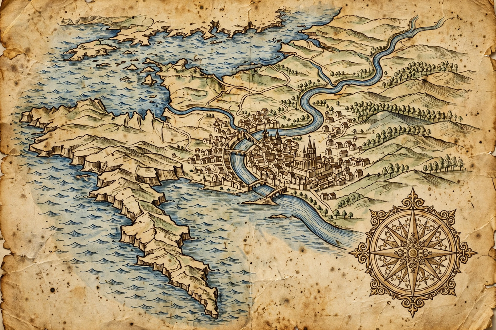

From Wikipedia, the free encyclopedia
| Duchy of Normandy | |
| Status | Vassal state of West Francia / France |
|---|---|
| Capital | Rouen |
| Common languages | Old Norman, Latin, Old Norse (early) |
| Government | Feudal monarchy |
| Established | 911 (Treaty of Saint-Clair-sur-Epte) |
| Disestablished | 1204 (mainland absorbed into French royal domain); title retained in the Channel Islands |
| First duke | Rollo (as count of Rouen) |
| Notable dukes | Richard I, Richard II, William the Conqueror, Henry II of England |
The Duchy of Normandy was a medieval polity in northern France that grew out of the fiefdom granted in 911 by King Charles the Simple of West Francia to the Viking leader Rollo under the Treaty of Saint-Clair-sur-Epte. In exchange for defending the Seine valley against other Vikings, Rollo accepted baptism and vassalage. The name "Normandy" derives from Normanni, "men of the north."

Rollo's successors — William Longsword, Richard I "the Fearless," and Richard II — consolidated the territory, adopted the French language and Christianity, and intermarried with the Frankish aristocracy, while retaining Scandinavian legal and social customs. The dukes built a notably centralised and stable administration, with a ducal court at Rouen, a powerful cavalry aristocracy, and a flourishing monastic culture.
In 1066 Duke William II, later William the Conqueror, invaded England and became its king after the Battle of Hastings. Thereafter Normandy and England were frequently united under one ruler, a link that drew the duchy into the orbit of the Angevin Empire of Henry II. In 1204 King Philip II Augustus of France conquered mainland Normandy from King John and incorporated it into the royal domain, ending the duchy's effective independence.
The Normans left a lasting mark across Europe and the Mediterranean: they conquered southern Italy and Sicily under the Hauteville family, founded the Principality of Antioch during the First Crusade, and later invaded Ireland. Norman Romanesque architecture, seen in monuments such as Durham Cathedral and the Tower of London, spread with their conquests. The Channel Islands remain a Crown Dependency whose sovereign is still styled Duke of Normandy.
See also: Norse people · Normans · Norman invasion of Ireland · Rollo